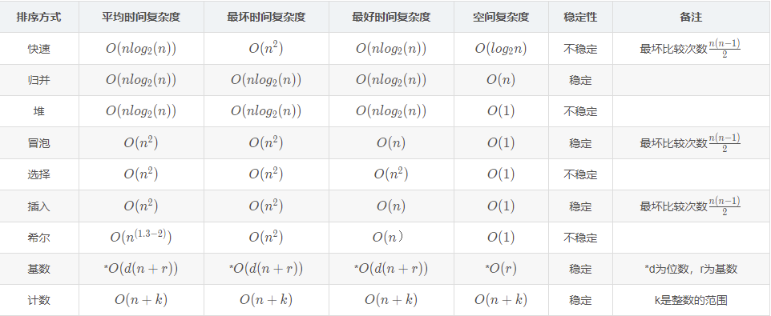
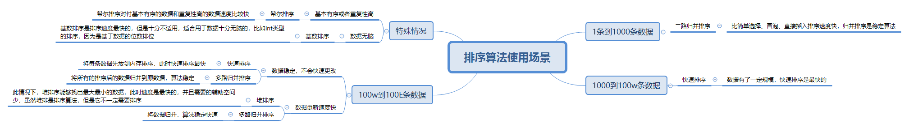

排序算法基础
所谓排序，即将原本无序的序列重新排列成有序序列的过程。这个序列中的每一项可能是单独的数据元素，也可能是一条记录（多个数据元素组成，如学号、姓名等）。如果是记录，可按照记录的主关键字排序（唯一标识符，主键）。
所谓稳定性，是指当待排序序列中有两个或两个以上相同的关键字时，排序前和排序后这些关键字的相对位置，如果没有发生变化就是稳定的，否则就是不稳定的
以下文章、代码大量在算法 | 菜鸟分类 | 菜鸟教程 (runoob.com)中取，其中有一些笔者的补充
排序算法的分类
- 插入类的排序：在一个有序的序列中，插入一个新的关键字。属于这类排序的有【直接插入排序】、【折半插入排序】、【希尔排序】
- 交换类排序：每一趟排序，都通过一些列的”交换“动作，让一个关键字拍到它最终的位置上。属于这类排序的有【冒泡排序】、【快速排序】
- 选择类排序：每一趟排序都选出一个最小（或者最大）的关键字，把它和序列中的第一个（或最后一个）关键字交换，这样最小（或最大）的关键字到位。属于这类排序算法的有【简单选择排序】、【堆排序】
- 归并类排序：将两个或两个以上的有序序列合并成一个新的有序序列。
- 基数类排序：基于多关键字排序，把一个关键字拆分成多个关键字。最特别的一类。
插入类排序
直接插入排序（Insertion Sort）
将第一待排序序列第一个元素看做一个有序序列，把第二个元素到最后一个元素当成是未排序序列。
从头到尾依次扫描未排序序列，将扫描到的每个元素插入有序序列的适当位置。（如果待插入的元素与有序序列中的某个元素相等，则将待插入元素插入到相等元素的后面。）
其过程相当于打纸牌，按照牌序算法从小到大排序
算法步骤
- 从数列中挑出一个元素，称为 “基准”（pivot）;
- 重新排序数列，所有元素比基准值小的摆放在基准前面，所有元素比基准值大的摆在基准的后面（相同的数可以到任一边）。在这个分区退出之后，该基准就处于数列的中间位置。这个称为分区（partition）操作；
- 递归地（recursive）把小于基准值元素的子数列和大于基准值元素的子数列排序；

public static void InsertionSort(int[] array){
// 从下标为1的元素开始选择合适的位置插入，因为下标为0的只有一个元素，默认是有序的
for (int i = 1; i < array.length; i++) {
// 记录要插入的数据
int tmp = array[i];
// 从已经排序的序列最右边的开始比较，找到比其小的数
int j = i;
while (j > 0 && tmp < array[j - 1]) {
array[j] = array[j - 1];
j--;
}
// 存在比其小的数，插入
if (j != i) {
array[j] = tmp;
}
}
}折半插入排序（Binary Insertion Sort）
折半插入排序的基本思想和直接插入排序类似，区别是查找插入位置的方法不同，折半插入排序是采用折半查找法来查找插入位置的
折半插入排序适合关键字较多的场景。
希尔排序（Shell’s Sort）
希尔排序，也称递减增量排序算法，是插入排序的一种更高效的改进版本。但希尔排序是非稳定排序算法。
希尔排序是基于插入排序的以下两点性质而提出改进方法的：
- 插入排序在对几乎已经排好序的数据操作时，效率高，即可以达到线性排序的效率；
- 但插入排序一般来说是低效的，因为插入排序每次只能将数据移动一位；
希尔排序的基本思想是：先将整个待排序的记录序列分割成为若干子序列分别进行直接插入排序，待整个序列中的记录”基本有序”时，再对全体记录进行依次直接插入排序。
算法步骤
- 取数组长度，除于2得增量
- 将数组中每一个增量的数据当做一组，进行插入排序。例如：增量为5，则取数组为x_0，x_5；增量为n，则取数组为x_i，x_i+n)
- 取上一次的增量，除于2得下一个增量，重复步骤2，3，直到增量为1为止
- 当增量为1，将整个数组用直接插入排序排序即可。

public static void shellSort(int[] arr) {
int length = arr.length;
int temp;
for (int step = length / 2; step >= 1; step /= 2) {
for (int i = step; i < length; i++) {
temp = arr[i];
int j = i - step;
while (j >= 0 && arr[j] > temp) {
arr[j + step] = arr[j];
j -= step;
}
arr[j + step] = temp;
}
}
}- 时间复杂度分析
- O(n^2)
- O(n^1.5)
- 平均情况：O(nlog_2n)
- 空间复杂度分析：O(1)
交换类排序
冒泡排序（Bubble Sort）
冒泡排序（Bubble Sort）也是一种简单直观的排序算法。它重复地走访过要排序的数列，一次比较两个元素，如果他们的顺序错误就把他们交换过来。走访数列的工作是重复地进行直到没有再需要交换，也就是说该数列已经排序完成。这个算法的名字由来是因为越小的元素会经由交换慢慢”浮”到数列的顶端。
作为最简单的排序算法之一，冒泡排序给人的感觉就像 Abandon 在单词书里出现的感觉一样，每次都在第一页第一位，所以最熟悉。冒泡排序还有一种优化算法，就是立一个 flag，当在一趟序列遍历中元素没有发生交换，则证明该序列已经有序。但这种改进对于提升性能来说并没有什么太大作用。

public class BubbleSort implements IArraySort {
@Override
public int[] sort(int[] sourceArray) throws Exception {
// 对 arr 进行拷贝，不改变参数内容
int[] arr = Arrays.copyOf(sourceArray, sourceArray.length);
for (int i = 1; i < arr.length; i++) {
// 设定一个标记，若为true，则表示此次循环没有进行交换，也就是待排序列已经有序，排序已经完成。
boolean flag = true;
for (int j = 0; j < arr.length - i; j++) {
if (arr[j] > arr[j + 1]) {
int tmp = arr[j];
arr[j] = arr[j + 1];
arr[j + 1] = tmp;
flag = false;
}
}
if (flag) {
break;
}
}
return arr;
}
}- 时间复杂度分析
- 最坏情况：O(n^2)
- 最好情况：O(n)
- 平均情况：O(n^2)
- 空间复杂度分析：O(1)
快速排序（Quick Sort）
快速排序是C.R.A.Hoare于1962年提出的一种划分交换排序。它采用了一种分治的策略，通常称其为分治法(Divide-and-ConquerMethod)。其具体思路是：
- 先从数列中取出一个元素作为基准数。
- 扫描数列，将比基准数小的元素全部放到它的左边，大于或等于基准数的元素全部放到它的右边，得到左右两个区间
- 再对左右区间重复第二步，直到各区间少于两个元素
快速排序由于排序效率在同为O(N*logN)的几种排序方法中效率较高，因此经常被采用，再加上快速排序思想——分治法也确实实用
分治法是一种很重要的算法，也就是“分而治之”的意思，就是把一个复杂的问题分解成两个或者多个相似的子问题，直到最后子问题可以简单的直接求解，原问题的解即子问题的解的合并。

private static int[] finalarrays;
public static int[] quickSort(int[] array){
sort(array, 0, array.length-1);//记得减一否则数组下标越界
return finalarrays;
}
//left和right代表下标值
static void sort(int[] array,int left,int right){
if(left >= right){ //递归出口，遍历的终点
finalarrays = Arrays.copyOf(array ,array.length);//将结果拷贝在属性上，会有多次更替
return;
}
int pivot = array[(left + right) / 2];//找出基准位
int index = partition(array, left, right, pivot);//获取基准数下标的后一位，更换位置
sort(array, left, index-1);//递归算法排序左边的数组
sort(array, index, right);//递归算法排序右边的数组
}
/**
* 核心，最能体现分治法的部分
*/
static int partition(int[] array ,int left, int right,int pivot){
while (left <= right){ //左右下标遍历
while (array[left] < pivot){ //从左边遍历查找是否有大于基准位的数字
left++;
}
while (array[right] > pivot){ //从右边遍历查找是否有小于基准位的数字
right--;
}
/**
* 排除以上情况后
* 将大于基准位数字的放在右边，将小于基准位数字的放在左边
* 也就是左右互换
*/
if(left <= right){
swap(array, left, right);
//互换完成后下标继续走
left++;
right--;
}
}
return left;//返回基准位下标的后一位
}
//左右数值交换
static void swap(int[] array, int left, int right){
int number;
number = array[left];
array[left] = array[right];
array[right] = number;
}- 时间复杂度分析
- 最坏情况：O(n^2)
- 最好情况：O(nlog_2n)，待排序列越接近无序，效率越高效
- 平均情况：O(nlog_2n)
- 空间复杂度分析：O(log_2n)，快速排序是递归进行的，递归需要栈的辅助，因此它需要的辅助空间比前面几类排序算法大
选择类排序
简单选择排序（Insertion Sort）
选择排序是一种简单直观的排序算法，无论什么数据进去都是 O(n²) 的时间复杂度。所以用到它的时候，数据规模越小越好。
算法步骤
首先在未排序序列中找到最小（大）元素，存放到排序序列的起始位置。
再从剩余未排序元素中继续寻找最小（大）元素，然后放到已排序序列的末尾。
重复第二步，直到所有元素均排序完毕。

代码实现：
public int[] sort(int[] sourceArray) throws Exception {
int[] arr = Arrays.copyOf(sourceArray, sourceArray.length);
// 总共要经过 N-1 轮比较
for (int i = 0; i < arr.length - 1; i++) {
int min = i;
// 每轮需要比较的次数 N-i
for (int j = i + 1; j < arr.length; j++) {
if (arr[j] < arr[min]) {
// 记录目前能找到的最小值元素的下标
min = j;
}
}
// 将找到的最小值和i位置所在的值进行交换
if (i != min) {
int tmp = arr[i];
arr[i] = arr[min];
arr[min] = tmp;
}
}
return arr;
}- 时间复杂度分析
- 平均情况：O(n^2)
- 空间复杂度分析：O(1)
堆排序（Heap Sort）
堆排序（Heapsort）是指利用堆这种数据结构所设计的一种排序算法。堆积是一个近似完全二叉树的结构，并同时满足堆积的性质：即子结点的键值或索引总是小于（或者大于）它的父节点。堆排序可以说是一种利用堆的概念来排序的选择排序。分为两种方法：
- 大顶堆：每个节点的值都大于或等于其子节点的值，在堆排序算法中用于升序排列；（父亲大，孩子小）
- 小顶堆：每个节点的值都小于或等于其子节点的值，在堆排序算法中用于降序排列；（父亲小，孩子大）
算法步骤
- 创建一个堆 H[0……n-1]；
- 把堆首（最大值）和堆尾互换；
- 把堆的尺寸缩小 1，并调用 shift_down(0)，目的是把新的数组顶端数据调整到相应位置；
- 重复步骤 2，直到堆的尺寸为 1。


代码实现：
public class HeapSort implements IArraySort {
@Override
public int[] sort(int[] sourceArray) throws Exception {
// 对 arr 进行拷贝，不改变参数内容
int[] arr = Arrays.copyOf(sourceArray, sourceArray.length);
int len = arr.length;
buildMaxHeap(arr, len);
for (int i = len - 1; i > 0; i--) {
swap(arr, 0, i);
len--;
heapify(arr, 0, len);
}
return arr;
}
private void buildMaxHeap(int[] arr, int len) {
for (int i = (int) Math.floor(len / 2); i >= 0; i--) {
heapify(arr, i, len);
}
}
private void heapify(int[] arr, int i, int len) {
int left = 2 * i + 1;
int right = 2 * i + 2;
int largest = i;
if (left < len && arr[left] > arr[largest]) {
largest = left;
}
if (right < len && arr[right] > arr[largest]) {
largest = right;
}
if (largest != i) {
swap(arr, i, largest);
heapify(arr, largest, len);
}
}
private void swap(int[] arr, int i, int j) {
int temp = arr[i];
arr[i] = arr[j];
arr[j] = temp;
}
}自己总结的交换过程：
- 从倒数第二层开始，对比父节点和子节点，若子节点的值大于父节点的值，交换父子节点，这里有两种情况：
- 子节点只有一个值大于父节点，直接交换即可
- 子节点全部大于父节点，选出最大的那个，和父节点交换
- 倒数第二层交换完毕后，重复以上交换步骤，直到交换的焦点为根节点（即交换到根节点），此时根节点为最大的数
- 将根节点和树的最后一个叶子节点交换（从右往左数），交换后，删除最后一个叶子节点（拿出来存到容器中）。
重复1-3步骤，直到该二叉树为空树，此时排序结束。
时间复杂度分析
- 平均情况：O(nlog_2n)
- 空间复杂度分析：O(1)
归并类排序
归并排序（Merge Sort）
归并排序（Merge sort）是建立在归并操作上的一种有效的排序算法。该算法是采用分治法（Divide and Conquer）的一个非常典型的应用。
作为一种典型的分而治之思想的算法应用，归并排序的实现由两种方法：
- 自上而下的递归（所有递归的方法都可以用迭代重写，所以就有了第 2 种方法）；
- 自下而上的迭代；
算法步骤
- 申请空间，使其大小为两个已经排序序列之和，该空间用来存放合并后的序列；
- 设定两个指针，最初位置分别为两个已经排序序列的起始位置；
- 比较两个指针所指向的元素，选择相对小的元素放入到合并空间，并移动指针到下一位置；
- 重复步骤 3 直到某一指针达到序列尾；
- 将另一序列剩下的所有元素直接复制到合并序列尾。

public class MergeSort {
public static void mergeSort(int[] arr) {
sort(arr, 0, arr.length - 1);
}
public static void sort(int[] arr, int L, int R) {
if(L == R) {
return; // 递归出口
}
int mid = L + ((R - L) / 2);// 找出中间值
sort(arr, L, mid);// 左子序列递归
sort(arr, mid + 1, R);// 右子序列递归
merge(arr, L, mid, R);// 出口后归并序列
}
public static void merge(int[] arr, int L, int mid, int R) {
int[] temp = new int[R - L + 1];
int i = 0;
int p1 = L;
int p2 = mid + 1;
// 比较左右两部分的元素，哪个小，把那个元素填入temp中
while(p1 <= mid && p2 <= R) {
temp[i++] = arr[p1] < arr[p2] ? arr[p1++] : arr[p2++];
}
// 上面的循环退出后，把剩余的元素依次填入到temp中
// 以下两个while只有一个会执行
while(p1 <= mid) {
temp[i++] = arr[p1++];
}
while(p2 <= R) {
temp[i++] = arr[p2++];
}
// 把最终的排序的结果复制给原数组
for(i = 0; i < temp.length; i++) {
arr[L + i] = temp[i];
}
}
}
- 时间复杂度分析
- O(nlog_2n)
- 空间复杂度分析：O(n)
外部排序
所谓外部排序，即对外存中的记录进行排序（相对于内部排序而言）。外部排序指的是大文件的排序，即待排序的记录存储在外存储器上，待排序的文件无法一次装入内存，需要在内存和外部存储器之间进行多次数据交换，以达到排序整个文件的目的。
外部排序常用的算法是归并排序，之所以归并排序常用，是因为它不需要将全部记录都读入内存即可完成排序。因此可以解决由于由于内存空间不足导致的无法对大规模记录排序的问题。
基数类
桶排序（Bucket Sort）
桶排序是计数排序的升级版。它利用了函数的映射关系，高效与否的关键就在于这个映射函数的确定。为了使桶排序更加高效，我们需要做到这两点：
- 在额外空间充足的情况下，尽量增大桶的数量
- 使用的映射函数能够将输入的 N 个数据均匀的分配到 K 个桶中
同时，对于桶中元素的排序，选择何种比较排序算法对于性能的影响至关重要。
什么时候最快：
当输入的数据可以均匀的分配到每一个桶中。
什么时候最慢：
当输入的数据被分配到了同一个桶中。
示意图：


代码实现：
public class BucketSort implements IArraySort {
private static final InsertSort insertSort = new InsertSort();
@Override
public int[] sort(int[] sourceArray) throws Exception {
// 对 arr 进行拷贝，不改变参数内容
int[] arr = Arrays.copyOf(sourceArray, sourceArray.length);
return bucketSort(arr, 5);
}
private int[] bucketSort(int[] arr, int bucketSize) throws Exception {
if (arr.length == 0) {
return arr;
}
int minValue = arr[0];
int maxValue = arr[0];
for (int value : arr) {
if (value < minValue) {
minValue = value;
} else if (value > maxValue) {
maxValue = value;
}
}
int bucketCount = (int) Math.floor((maxValue - minValue) / bucketSize) + 1;
int[][] buckets = new int[bucketCount][0];
// 利用映射函数将数据分配到各个桶中
for (int i = 0; i < arr.length; i++) {
int index = (int) Math.floor((arr[i] - minValue) / bucketSize);
buckets[index] = arrAppend(buckets[index], arr[i]);
}
int arrIndex = 0;
for (int[] bucket : buckets) {
if (bucket.length <= 0) {
continue;
}
// 对每个桶进行排序，这里使用了插入排序
bucket = insertSort.sort(bucket);
for (int value : bucket) {
arr[arrIndex++] = value;
}
}
return arr;
}
/**
* 自动扩容，并保存数据
*
* @param arr
* @param value
*/
private int[] arrAppend(int[] arr, int value) {
arr = Arrays.copyOf(arr, arr.length + 1);
arr[arr.length - 1] = value;
return arr;
}
}基数排序（Radix Sort）
基数排序是一种非比较型整数排序算法，其原理是将整数按位数切割成不同的数字，然后按每个位数分别比较。由于整数也可以表达字符串（比如名字或日期）和特定格式的浮点数，所以基数排序也不是只能使用于整数。
基数排序有两种实现方式：
- 最高位优先。即先按最高位排成若干子序列，再对每个子序列按次高位排序
- 最低位优先。这种方式不必分成子序列，每次排序全体关键字都参与。最低位可以不通过比较，而是通过分配和收集进行排序。

代码实现：
/**
* 基数排序
* 考虑负数的情况还可以参考： https://code.i-harness.com/zh-CN/q/e98fa9
*/
public class RadixSort implements IArraySort {
@Override
public int[] sort(int[] sourceArray) throws Exception {
// 对 arr 进行拷贝，不改变参数内容
int[] arr = Arrays.copyOf(sourceArray, sourceArray.length);
int maxDigit = getMaxDigit(arr);
return radixSort(arr, maxDigit);
}
/**
* 获取最高位数
*/
private int getMaxDigit(int[] arr) {
int maxValue = getMaxValue(arr);
return getNumLenght(maxValue);
}
private int getMaxValue(int[] arr) {
int maxValue = arr[0];
for (int value : arr) {
if (maxValue < value) {
maxValue = value;
}
}
return maxValue;
}
protected int getNumLenght(long num) {
if (num == 0) {
return 1;
}
int lenght = 0;
for (long temp = num; temp != 0; temp /= 10) {
lenght++;
}
return lenght;
}
private int[] radixSort(int[] arr, int maxDigit) {
int mod = 10;
int dev = 1;
for (int i = 0; i < maxDigit; i++, dev *= 10, mod *= 10) {
// 考虑负数的情况，这里扩展一倍队列数，其中 [0-9]对应负数，[10-19]对应正数 (bucket + 10)
int[][] counter = new int[mod * 2][0];
for (int j = 0; j < arr.length; j++) {
int bucket = ((arr[j] % mod) / dev) + mod;
counter[bucket] = arrayAppend(counter[bucket], arr[j]);
}
int pos = 0;
for (int[] bucket : counter) {
for (int value : bucket) {
arr[pos++] = value;
}
}
}
return arr;
}
/**
* 自动扩容，并保存数据
*
* @param arr
* @param value
*/
private int[] arrayAppend(int[] arr, int value) {
arr = Arrays.copyOf(arr, arr.length + 1);
arr[arr.length - 1] = value;
return arr;
}
}各大排序算法时间空间复杂度总结

速记：
时间复杂度：
- 平均情况：快些以$nlog_2n$的速度归队。“快”指快速排序，“些”指希尔排序（谐音），“归”指归并排序，“队”指堆排序（谐音），平均情况下，快速排序、希尔排序、归并排序和堆排序的时间复杂度均为$O(nlog_2n)$，其他的都是$O(n^2)$。一个特殊的是基数排序，其时间复杂度为$O(d(n+r_d))$
- 最坏情况，快速排序的时间复杂度为$O(n^2)$，其他都和平均情况相同
空间复杂度：
- 快速排序为$O(log_2n)$
- 归并排序为$O(n)$
- 基数排序为$O(r_d)$
- 其他都是$O(1)$
算法稳定性
- 快些选堆。“快”指快速排序，“些”指希尔排序（谐音），“选”指简单选择排序，“堆”指堆排序，这4种是不稳定的，其他自然都是稳定的。
算法使用场景：
不存在最好的排序算法，我们需要根据上面这些性能选择合适的方法，甚至是结合使用。
- 当数据规模较小时候，可以使用简单的直接插入排序、直接选择排序或者冒泡排序。
- 当文件的初态已经基本有序或者存在大量重复数据，可以用希尔排序。
- 当文件的初态已经基本有序，可以用直接插入排序和冒泡排序。
- 当数据规模较大时，应用速度最快的排序算法，可以考虑使用快速排序。当记录随机分布的时候，快速排序平均时间最短，但是会出现最坏的情况，这个时候的时间复杂度是O(n^2)，且递归深度为n,所需的占空间为O(n)。
- 堆排序不会出现快排那样最坏情况，且堆排序所需的辅助空间比快排要少，但是这两种算法都不是稳定的，要求排序时是稳定的，可以考虑用归并排序。
- 归并排序可以用于内部排序，也可以使用于外部排序。在外部排序时，通常采用多路归并，并且通过解决长顺串的合并，加上长的初始串，提高主机与外设并行能力等，以减少访问外存额外次数，提高外排的效率。
- 特殊的桶排序、基数排序都是稳定且高效的排序算法，但有一定的局限性：
- 关键字可分解。
- 记录的关键字位数较少，如果密集更好
- 如果是数字时，最好是无符号的，否则将增加相应的映射复杂度，可先将其正负分开排序。
常用时间复杂度大小比较

本博客所有文章除特别声明外，均采用 CC BY-SA 4.0 协议 ，转载请注明出处！